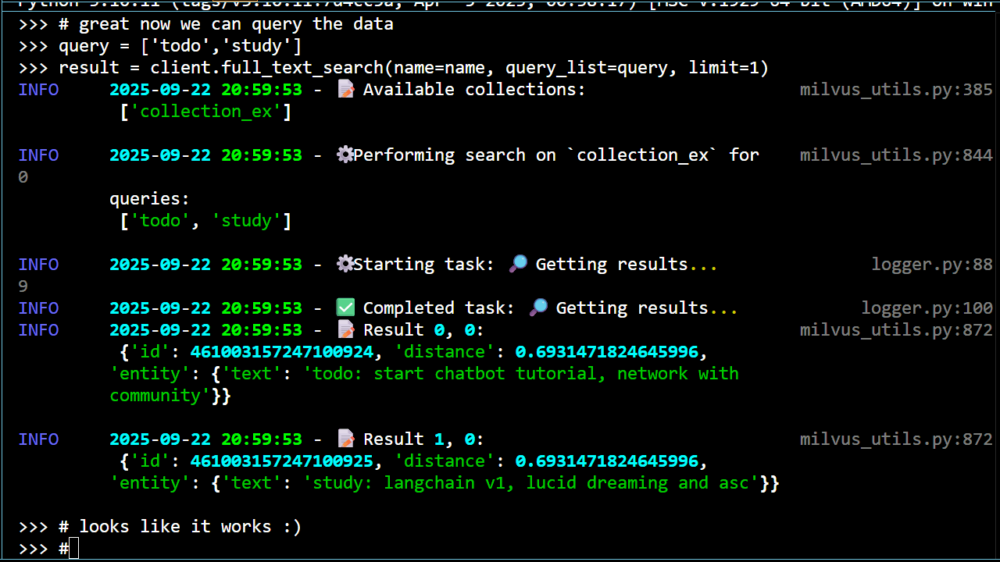
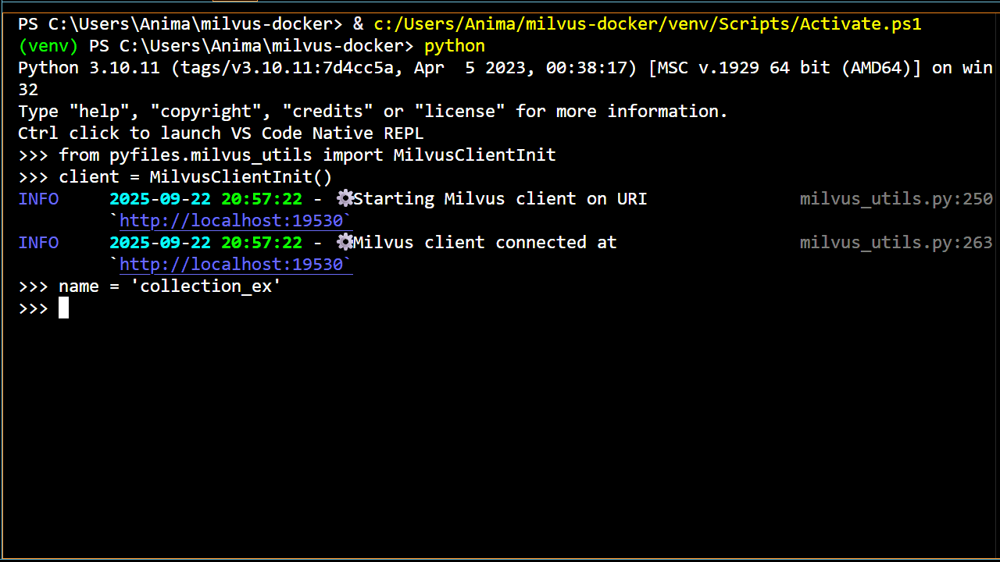

Milvus with Docker and Python⚓︎



TL;DR
Learn how to build and use a vector database server to store and search your documents on your local machine . Then, you can use this setup as a tool to give to locally run AI agents .
About This Project⚓︎
Here, we're going to setup a Milvus server in Docker for using the vectorstore on our local machines . We'll see how to add some example data to the vectorstore and then how to search the database for a given query . Once our Milvus server is setup properly, we can also check out some useful information about our client sessions by navigating to http://localhost:9091/webui.
The code we learn and use here will serve as the foundation for an indispensable tool to give to our agents, allowing them to obtain information about our personal data . To see what sorts of agents we'll build to use this tool and others, check out the agents tutorials.
As previously mentioned, the way we're going to build agents is by first building local servers for all the gadgets that our agents will need . Then, we can learn how to pass these gadgets over to our agents with LangChain and LangGraph.
We've gone over how to create an Ollama server to chat with LMs and a SearXNG server to search the web. Now, we're going to follow the same sort of process to create the Milvus server. We'll learn how to setup and use the provided Python code, built on the PyMilvus library, to interact with the server then dive into the code to see how it all works . This time, we'll also dive into the math behind the search process to better understand our results .
A vector database, or a vectorstore, is just a special type of database that can be used to store and query your data. When data is added to the vectorstore, it's stored with additional representations called embeddings which map the data in ways that allow relevant information to be obtained in searches . There are various types of embeddings to represent data differently , and we'll get a look at how to use one of them in this tutorial, the sparse embedding or sparse vector 1.
Vectorstores also utilize special variables called indices which describe how the data should be represented for quick searches . By defining different embeddings and indices, we can represent and search our data in different ways. We can have very different types of data (e.g. images or code documents ) and still be able to find relevant information from our queries if we choose proper embeddings and indices .
One way to search data is to do an exact keyword filtering . For example, if the search query has the word Milvus in it, the most relevant data entries found will be those that contain the word Milvus. The search that we'll do in this tutorial, a full-text search, is similar in that it searches for entire keywords of the query while utilizing sparse vectors for the search .
However, this type of search also ranks documents for a given query , and so it's probably better defined as a ranking algorithm. There's quite a lot of nuance here that can be worked through and we'll get to do just that when we dive into the code and the math .
Besides full-text searches, another type of search is the semantic search. These searches find data based on relations that are, much of the time, not readily apparent . Instead of simply finding the data that has a particular keyword in it, these searches find data that have complex relations to the query due to the use of describing the data with dense embeddings, or dense vectors 2.
Using Milvus as a vectorstore to perform these types of searches is an obvious choice . As we'll see here and in the document agent tutorial, it's a powerhouse for storing and searching data . As for all the various types of searches that we discussed above, Milvus already has a lot of these primed and ready for us to use .
With Milvus, we could choose to do either a full-text or a semantic search, depending on our preferences . We could also perform a hybrid search, meaning we can query the data on both sparse and dense vectors at the same time, performing a full-text search (exact keyword) and a semantic search (complex relationships) simultaneously while utilizing ranking algorithms to further increase the relevancy of our results .
The Milvus server will also utilize a MinIO server for data storage and an etcd server for storage and coordination. I won't go into the details of this part of the setup, though I tried to add extensive documentation to the code as a result of me trying to understand a bit better what it was doing .
There are a couple of alternatives that I tried for storing and searching data, both of which bridge nicely with LangChain. If Milvus doesn't fit your needs, you can also check out FAISS or Chroma.
For a refresher on how to use Docker to build an LM server that can power the decision making and response generating aspects of our agents, check out the Ollama server tutorial. To see how to build a metasearch engine tool to search the web, check out the SearXNG server tutorial. For an idea of what types of agents we'll build with our servers, check out the agents tutorials.
Finally, before you start building, you can also check out the Docker compose file on which ours is based .
Now, let's get building !
Getting Started⚓︎
First, we're going to setup and build the repo to make sure that it works . Then, we can play around with the code and learn more about it .
Check out all the source code here .
To setup and build the repo follow these steps:
Toggle for visual instructions
This is currently under construction.
- Make sure Docker is installed and running.
-
Clone the repo, head there, then create a Python environment:
-
Activate the Python environment:
-
Install the necessary Python libraries:
-
Build and start all the Docker containers:
All server data will be located in Docker volumes (milvus-data, minio-data, and etcd-data).
-
Head to http://127.0.0.1:9091/webui/ to check out some useful Milvus client information.
-
Run the test script to ensure the Milvus server can be reached through the PyMilvus library:
All logs from the test script are output in the console and stored in the
./milvus-docker.logfile. -
When you're done, stop the Docker containers and cleanup with:
Example Use Cases⚓︎
Now that the repo is built and working, let's play around with the code a bit .
When we built our Ollama and SearXNG servers, we demonstrated that the servers could be reached and properly invoked by using the provided Python methods . We did this by first instantiating the classes that held the methods to use, then executed the proper commands in the command line and by running scripts .
In this case, the main class to interact with the Milvus server is the MilvusClientInit class. Once this class is initialized, there are many external methods that we can use to manage our vectorstore collections and perform full-text searches .
We can create collections to hold our data using the create_collection method and delete these collections with the drop_collection method. We can list all available collections with the list_collections method, and we can add data to or remove data from a collection using the insert and delete methods. Finally, we can search a collection for a given query using the full_text_search method.
For this tutorial, we'll represent our data with sparse vectors which can then be used to search for particular keywords . When we build our document agent, we'll see how to add in additional dense vectors to represent our data. In this case, we'll be able to use both sparse and dense embeddings to perform hybrid searches for both particular keywords and data based on complex, semantic connections to the query .
To start off learning how to use the code, let's manage and search a vectorstore through the command line .
Data Management and Search through the Command Line⚓︎
Toggle for visual instructions
This is currently under construction.
To manage and search data in the command line, follow these steps:
-
Do step 3 then step 5 of the
Getting Startedsection to activate the Python environment and run all the Docker containers to start the Milvus server. -
Call the Python environment to the command line:
-
Now that you're in the Python environment, import the MilvusClientInit class:
-
Initialize the MilvusClientInit class:
-
Create a collection with the default parameters:
-
Insert the default data into the collection:
-
Perform the default full-text search on the data:
-
Drop the default collection at the end to clean up:
-
Do step 8 of the
Getting Startedsection to stop the containers when you're done.
Just like with the test script, all logs will be printed in the console and stored in ./milvus-docker.log.
There are lots of variables we can customize here: the collection we use, the data we insert, and the queries for which we search the database 3.
In the next example, I show how to make these customizations by creating and running a custom script .
Data Management and Search through Running Scripts⚓︎
Toggle for visual instructions
This is currently under construction.
To manage and search your data through a custom script, follow these steps:
-
Do step 3 then step 5 of the
Getting Startedsection to activate the Python environment and run the Milvus server in Docker. -
Create a script in the
./scriptsfolder namedmy-data-search-ex.pywith the following:# Import MilvusClientInit class from pyfiles.milvus_utils import MilvusClientInit # Initialize client client = MilvusClientInit() # Create collection collection_name = 'my_collection' client.create_collection(collection_name) # Create data and insert into collection my_data = [ {'text': 'grocery list: bananas, bread, choco'}, {'text': 'grocery: green beans'}, {'text': 'todo list: start chatbot tutorial, network with community'}, {'text': 'study list: langchain v1, lucid dreaming and asc'}, {'text': 'study latest gradio implements'}, {'text': 'My dream last night involved'}, {'text': 'then I woke up, confused as to if I was still dreaming.'} ] client.insert(name=collection_name, data=my_data) # Define the maximum number of results and the search query num_results = 2 query_list = ['grocery', 'study', 'dream'] # Get results client.full_text_search( name=collection_name, query_list=query_list, limit=num_results ) # (Optional) Delete collection when done to clean up client.drop_collection(name=collection_name) -
Run the script
-
Do step 8 of the
Getting Startedsection to stop the containers when you're done.
Again, all logs will be printed in the console and stored in ./milvus-docker.log. The name of the Python script doesn't matter as long as you use the same name in step 2 and step 3.
Notice these searches are full-text, meaning the data is searched for exact keywords . We can improve this search by performing a semantic search simultaneously, picking up on more subtle relationships between the data . This is exactly what we'll do in the document agent tutorial .
Now that we understand how to use the code, let's open it up to check out the gears .
Project Structure⚓︎
Before we take a deep dive into the source code , let's look at the repo structure to see what code we'll want to learn .
├── docker-compose.yml # Docker configurations
├── pyfiles/ # Python source code
│ └── logger.py # Python logger for tracking progress
│ └── milvus_utils.py # Python methods to use Milvus server
├── requirements.txt # Required Python libraries for main app
├── requirements-dev.txt # Required Python libraries for development
├── scripts/ # Example scripts to use Python methods
│ └── milvus_test.py # Python test of methods
│ └── latency_test.py # Timing tests for methods
├── tests/ # Testing suite
├── third-party/ # Milvus/PyMilvus licensing
├── validators/ # Validators for Python methods
└── └── milvus_types_.py # Type validation for Python methods
milvus_utils.py
The
milvus_utils.pyfile defines the class and methods needed in order to manage and search custom data using our Milvus server. This is the file on which we're going to spend our deep dive .
milvus_types.py
This file performs type validation for the methods in the
milvus_utils.pyfile . What this means is that the arguments and results of the methods are checked to make sure they have the correct Python type using Pydantic (see lines 211-213 & 223-225 of the full version of themilvus_utils.pyfile for an example of how this file is used). This trick is quite helpful for ridding your code of potential bugs related to recieving the wrong types of objects . I won't go into this file in detail, but you can check it out if you're interested in learning .
How do all the files work?
For a refresher on the logger.py, requirements*.txt, latency_test.py, and milvus_test.py files as well as the tests/ folder, check out the Ollama and SearXNG tutorials.
We've also seen the Docker compose file for the Ollama and SearXNG tutorials. Here, this file doesn't contain much we haven't seen yet. Similarly to the SearXNG server, we define multiple services for Milvus as well as the supporting servers, MinIO and etcd. We also perform some new tricks for healthchecks and ensure that the Milvus server can't be started without its supporting servers . I won't go into details for these, but you can check out the file to see what I mean.
Ok, that's all the files . Let's go diving !
Code Deep Dive⚓︎
Here, we're going to look at the relevant files in more detail . We're going to start with looking at the full files to see which parts of the code we'll want to learn, then we can further probe each of the important pieces to see how they work .
File 1 | milvus_utils.py⚓︎
Above, I show the milvus_utils.py file in all its full glory as well as in a skeleton version which is all the code needed to work and almost none of the code for some crucial best practices.
Compared to the ollama_utils.py file in the Ollama server tutorial and the searxng_utils.py in the SearXNG server tutorial, many more of the methods in the MilvusClientInit class are external methods to be used outside the class. However, the main methods that we're going to use are the create_collection, insert, and full_text_search methods. These are what we used when working in the command line and running scripts in the Example Use Cases section.
Before we start, you can also checkout the guide that much of this code is based on.
Now, let's check these methods out .
Method 1.1 | create_collection⚓︎
- See lines 141-175 of
milvus_utils.py
We've already seen that the create_collection method can take in a collection name, then create a Milvus collection that can be used to store and search data. Now, we can open up the method to see how this is all done .
| create_collection method of milvus_utils.py | |
|---|---|
Before discussing how the method works, let's discuss the default values that go into it. These include the:
collection_name(lines 2 and 7) which is just a string defining the name of the collection,field_params_list(line 8) defining the fields with which to represent our data,func_bm25(line 9) defining the embedding function to use for an additional representation of the data,index_params_list(line 10) defining the fields to use for searching and the index type for quick retrieval.
Let's look at the last three of these together .
We can see from the field_params_list that each data entry will have three fields associated with it, an ID for management, a text field which will be the content of the data entry, and a sparse field . This last field will be populated by our embedding function, func_bm25, which will have a text field input and will output a sparse field. We can also see from the index_params_list that this field will be the one used to search the data .
In other words, we start with a list of text entries and our embedding function, func_bm25, turns this text into sparse vectors . As defined by our index_params_list, these vectors are then used when scoring results to output the most relevant ones .
I want more info about the default values!
There's a lot more that can be said about the field_params_list, the func_bm25, and the index_params_list.
This is how we tell Milvus what fields we want our data to be represented by .
We let Milvus handle giving IDs to our data entries by setting the auto_id argument to True. We put a limit on the size of text entries and we set the enable_analyzer argument to True in order to use our embedding function to turn the text field into a sparse field . Finally, each of these fields needs to have a datatype associated with it that Milvus can work with .
This is how we turn text fields into sparse vectors and how we score documents to obtain results with the full_text_search method .
This uses the BM25 method that's built into Milvus. For more details about how this function works see the math deep dive section.
This is how we tell Milvus the fields on which we want our documents to be evaluated when searching and how to index our data for quick retrieval .
We use the SPARSE_INVERTED_INDEX value for the index_type. What does this mean ?
The INVERTED index type optimizes document retrieval by mapping each term to each document that contains the term . Here, we're just making sure we use the inverted index for sparse vectors specifically .
Milvus stores data in growing segements which, after reaching some size, are indexed according to the user's choice of indices . So, the text fields are turned into sparse vectors with BM25 and this information is stored in a growing segment. Then, when the segment gets large enough the sparse vectors are indexed in an inverted format that allows for quicker fetching of relevant documents . However, we don't want to index every segment before they reach a particular size, because we would then use up too much memory for too small a gain in speed .
We let Milvus know that we want to use the BM25 metric for evaluation and we tack on some extra parameters for further customization. We can see that we're setting the \(k_1\) and \(b\) constants from the BM25 scoring function.
We're also using the DAAT_MAXSCORE algorithm to allow for faster evaluation time by filtering out documents that can't possibly score higher than the current highest score evaluated . I believe it also does some sorting of the query terms by how much they can possibly contribute to the document scores (i.e. terms that will give very high scores are scored first and terms that will give very low scores are deemed non-essential and thrown out) .
After initializing the schema to use for the collection (lines 14-16 of the create_collection method), we add each of the fields in the field_params_list to the schema using the _create_field method (lines 20-21). We then add the func_bm25 to the schema functions using the schema.add_function method (lines 25-26).
We also initialize the index parameters list to use for searching the collection (line 30) and we add each of the indices in the index_params_list using the _create_index method (lines 31-32). Finally, we create the collection with the client.create_collection method (lines 35-39) .
Let's discuss how the schema and index parameters are initialized and the collection is created through the client attribute of the MilvusClientInit class. .
Method 1.2 | _init_client⚓︎
- See lines 101-108 of
milvus_utils.py
Everytime we use the client attribute of the class, we're using the MilvusClient that we initiated with the _init_client method.
| Defining the client attribute of the MilvusClientInit class | |
|---|---|
So, we can see that we've initialized a MilvusClient on the URI that was defined in our Docker setup. For collection creation, we then use the built in MilvusClient methods to initialize the schema and index parameters, as well as create the collection .
How do the other methods work?
The _create_field and _create_index methods are also just simple wrappers of built in PyMilvus methods :
For the _create_field method, we use the schema.add_field method which takes in all the necessary inputs that are needed for a given field . So, we define these with the field_params_list, then we pass these params to the add_field method (see lines 20-21 of the create_collection method) .
The _create_index method works exactly the same way, except it uses the index_params.add_index method . Just like before, we define all the inputs we need for each of the indices in the index_params_list, then pass these params to the add_index method (see lines 31-32 of the create_collection method) .
Now that we understand how collections are defined and created with the create_collection method . Let's check out how data is inserted with the insert method .
Method 1.3 | insert⚓︎
- See lines 188-202 of
milvus_utils.py
We've already seen that the insert method can take in a collection name and some data then add this data to the appropriate collection. Now, we can open up the method to see how this is all done .
| insert method of milvus_utils.py | |
|---|---|
When we recall how the client attribute of the class is defined, we can see that this method is just a wrapper of the MilvusClient method with the same name . We want to insert some given data into the given collection, and we want to wait for a bit before moving on to ensure the data is inserted before trying any searches .
Ok, that one was simple . Now, that we know how to create a collection and insert data into the collection, let's see how to do the full-text search .
Method 1.4 | full_text_search⚓︎
- See lines 221-248 of
milvus_utils.py
We've already seen that the full_text_search method can take in a collection name, a list of queries, and a maximum number of results, then output a list of dictionaries showing the most relevant results. Now, we can open up the method to see how this is all done .
| full_text_search method of milvus_utils.py | |
|---|---|
Here, we define the full_text_search method with some default values for the collection name, the list of queries we want to search for, and the maximum number of results to retrieve. We tell Milvus we want to do a search on the sparse vector fields (lines 21 & 35) and we want the results to be returned with the text fields (lines 22 & 36) .
We also define an extra search parameter, the drop_ratio_search which is some number between zero and one defining the fraction of documents to drop before searching . In our case, we tell Milvus to drop \(20\%\) of the candidates. Higher values means our search will be faster but less accurate .
That's it ! We've gone through all the code in this repo that's needed to understand how to setup a Miluvs server in Docker and use it to manage and search custom data .
To get an idea of how documents are scored and retrieved using this method, let's check out the func_bm25 function in more detail .
Math Deep Dive⚓︎
Here, we're going to look at the relevant math in more detail .
BM25⚓︎
This scoring function was the 25th (and best performing) version of the algorithms tested for the Okapi Information System at London's City University back in the late 1900s and has been widely used since for exact keyword searches .
Let's say we want to search our documents for a query, \(q\). The scoring function will take into account three terms in order to determine the relevancy of a given document, \(d\): the Term Frequency (TF), the Inverse Document Frequency (IDF), and the Document Length Normalization (DLN).
- \(\text{TF}(q,d)\): the frequency at which the term, \(q\), appears in the document, \(d\)
- \(\text{IDF}(q)\): a measure of how many documents contain the term, \(q\)
- \(\text{DLN}(d)\): ensures that longer documents don't get higher scores based mostly on their length rather than their relevancy.
The TF is just some number, however many times the term appears in the document . The other two terms have more complicated mathematical forms . Let's look at these two, then we can see how all the terms go together to get the BM25 score .
Function 1.1 | Inverse Document Frequency⚓︎
The IDF is given by:
where \(q\) is the term being searched for, \(N\) is the total number of documents, and \(n(q)\) is the number of documents that contain the term \(q\).
What happens if none of the documents contain the term (i.e. \(n(q)=0\))?
So, if none of the documents contain the term, we get some positive number that grows with the total number of documents.
What happens if all the documents contain the term (i.e. \(n(q)=N\))?
So, if all the documents contain the term, the IDF for that term gets close to zero (especially when \(N\gg1\), which will usually be the case).
To wrap it all up:
| \(n(q)\) | \(\text{IDF}(q)\) |
|---|---|
| Few documents contain \(q\) | Increases as \(N\) increases |
| Most documents contain \(q\) | Decreases to zero as \(N\) increases |
Now, let's look at the DLN term .
Function 1.2 | Document Length Normalization⚓︎
The DLN depends on some constant, \(0 \leq b \leq 1\), chosen by the user ,
where \(d_l\) is the length of document \(d\) and \(D_l\) is the average length of all documents.
What happens if the length of the document is much longer than the average length (i.e. \( d_l \gg D_l \))?
So if the length of the document is much longer than the average length, the DLN will be some large number multiplied by a constant chosen by the user. If the constant is zero, then the DLN is also zero and if the constant is one, the DLN is the ratio of the document length to the average length, which is some very large positive number.
What happens if the length of the document is much shorter than the average length (i.e. \( d_l \ll D_l \))?
So, if the length of the document is much shorter, the DLN is some number between zero (if \(b=1\)) and one (if \(b=0\)); a very mild number compared to the ratio above.
To wrap it all up:
| \(d_l / D_l\) | \(\text{DLN}(d)\) for \(b=0\) | \(\text{DLN}(d)\) for \(b=1\) |
|---|---|---|
| Document much longer than average | 0 | Some large number |
| Document much shorter than average | 1 | 0 |
Now that we understand these terms , let's check out the BM25 function .
Function 1.3 | Final Form of BM25⚓︎
The BM25 scoring function is given by:
where \(d\) is the document being scored, \(Q\) is the user's entire search query which is split into \(m\) terms, and \(q_i\) is the \(i\)-th term of the search query. Here, \(0 \leq k_1 \leq 3\) is a constant chosen by the user which determines the contribution of TF to the score by capping off the score as TF gets really large .
If a document contains a term over and over again, the TF is going to be huge and the score for this term is going to blow up compared to the other scores. However, if we limit how large the score can be for a given term, we won't end up with this problem. Check out the equation below to see what I mean as TF becomes very large .
So, for terms that have really large TF, the contribution to the score from TF is capped off to \(k_1 + 1\). This prevents the score from being dominated by overly frequent terms and allows for more subtle results to be found . As \(k_1\) gets larger, the maximum allowed contribution from the TF also gets larger and when \(k_1 = 0\), there's no contribution from the TF at all.
To wrap it all up, for very large TF:
| \(k\) | \(\text{score}(d, Q)\) |
|---|---|
| 0 | \(\sum^{m}_{i=1} \text{IDF}(q_i)\) |
| 3 | \(4 \sum^{m}_{i=1} \text{IDF}(q_i)\) |
Now, recall the limits we examined for the IDF. The scoring function depends on the IDF linearly for a given term. So, ignoring the TF contribution (which is capped off to \(k_1+1\)), if most of the documents contain the term , the score is very small, and if none of the documents contain the term , the score becomes some positive number that grows with the total number of documents.
This means if the document being scored contains terms in our query that don't appear in the other documents very often, it's bound to be relevant. But, if the document contains terms in the our query that almost all documents have, it may not be that relevant .
Now, recall the limits we examined for the DLN. As the length of the document being scored becomes much longer than the average length , the DLN term in the denominator becomes larger and larger, causing the score to be smaller. While, as the length becomes much shorter than the average , the DLN term is just some number between zero and one and won't affect the score very much.
It seems then, that this term is mostly used to penalize documents that are much longer than the average length. We don't want the scores for these terms to blow up just because they're much longer and contain many more words (i.e. TF is potentially larger compared to shorter documents) .
What does this all mean ? Well, we see that a document will get a high score for a given term if the term appears in the document frequently and it's one of the few documents that contain the term . As the frequency of the term in the document goes down or as the number of documents that also contain the term goes up, the score will go down . Furthermore, if the document is very long its score will be penalized, and if the term frequency is very large its score will be capped off.
With all this being said, it seems that a high score means a more relevant document, and as the score goes down the document becomes less relevant to the search terms. This is helpful to understand, because documents are ranked using this score through a cosine-similarity test .
This test checks the similarity between two vectors through a simple dot product (comparing the angle between the two) . If the two vectors are the same, the angle between them is equal to zero, and their similarity score is equal to one. As the angle between the two grows, the similarity score gets closer to zero (for strictly positive vector elements) . Let's check out the cosine-similarity score for two vectors \(\textbf{A}\) and \(\textbf{B}\) to see what I mean :
where \(A_i\) and \(B_i\) are the \(i\)-th components of the vectors \(\textbf{A}\) and \(\textbf{B}\). So, all we need to do is add up all the components for the vectors to get the score .
In our case, the vectors that we want to compare are just the sparse vectors that we've been discussing. But how does the func_bm25 turn the text fields into sparse vectors ?
When we add a document to Milvus, it first does a lot of preprocessing behind the scenes, including tokenization and stop word removal. From this preprocessing, it obtains the set of all tokens within the document and the TF value for each token is obtained . The sparse vector for the document is then created from these TF values and stored.
When a user then invokes the full-text search with a query , the query goes through similar preprocessing to obtain the search tokens and a sparse vector representation from the TF values of a given document is obtained. This query vector is then combined with the IDF values according to the BM25 score and compared to the stored vector of the document using the cosine-similarity score .
Notice that when Milvus gives us results from the full-text search, it includes a distance parameter . This is just the cosine-similarity score between the query vector combined with the IDF and the stored vector of the document. As expected, higher distances pertain to more relevant documents (both cosine-similarity and IDF increase with increasing relevance) .
And that's it ! We've gone through all the code and math that's needed to understand how to use Miluvs to search our custom data for relevant information .
Next Steps & Learning Resources⚓︎
If you've followed along with the servers tutorials up to this point, we've finished building all the individual servers that we'll need in order to start our agent builds . However, there is one final (and very simple tutorial) to show how to combine all the servers covered in the series. This last tutorial will show how to build the complete server stack that we'll use for our specialized agent builds .
Continue learning how to build the final server stack by choosing the last tutorial in the servers series, learn how pass this Milvus server to an agent and interact with it through a Gradio web UI in the document agent tutorial, or checkout other agent builds in the rest of the agents tutorials.
Just like all the other tutorials, all the source code is available so you can plug and play any of tutorial code right away .
Contributing⚓︎
This tutorial is a work in progress. If you'd like to suggest or add improvements , fix bugs or typos , ask questions to clarify , or discuss your understanding , feel free to contribute through participating in the site discussions! Check out the contributing guidelines to get started.
-
These vectors are called sparse because most of the indices are zero. They're highly focused in a small number of dimensions . Or, in other words, almost all of their magnitude is in a handful of select directions. These seem like good vectors to describe an exact keyword . ↩
-
Where most available dimensions are naught for sparse vectors, dense vectors are more spread across the dimensions in complex ways . This is good for modeling complex relationships between data and for finding relevant data that may not necessarily contain the exact keywords in the query . ↩
-
We can also customize the fields that describe our data , the index parameters that describe how we search our data , and the functions with which we embed our data . I leave these examples for a future tutorial where we learn how to give a LangChain agent the ability to do hybrid searches on our documents . ↩